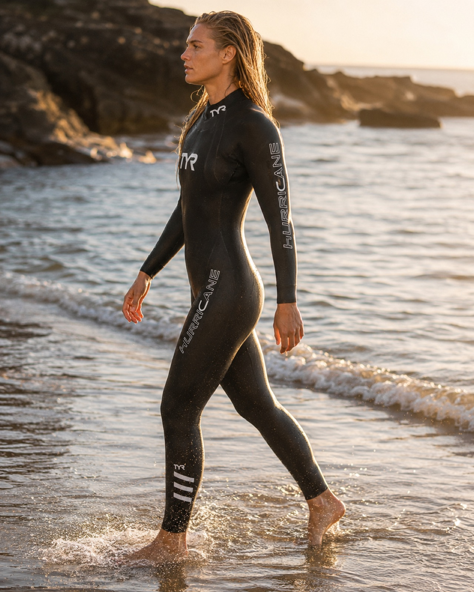
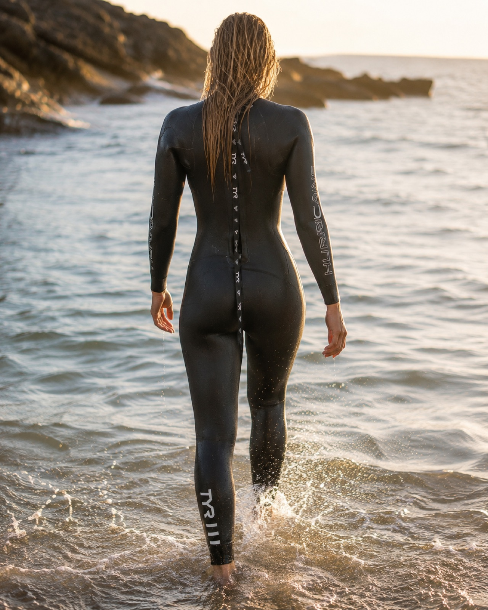
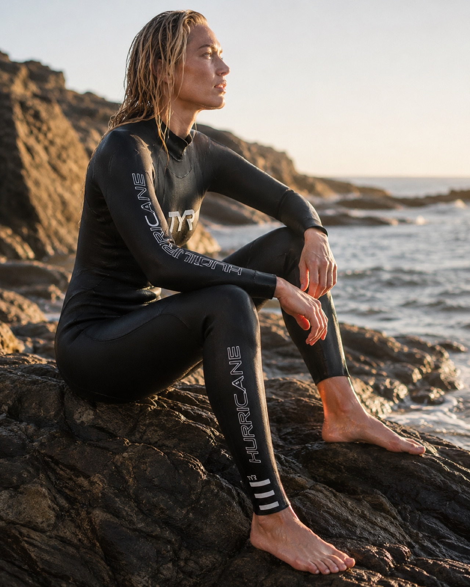
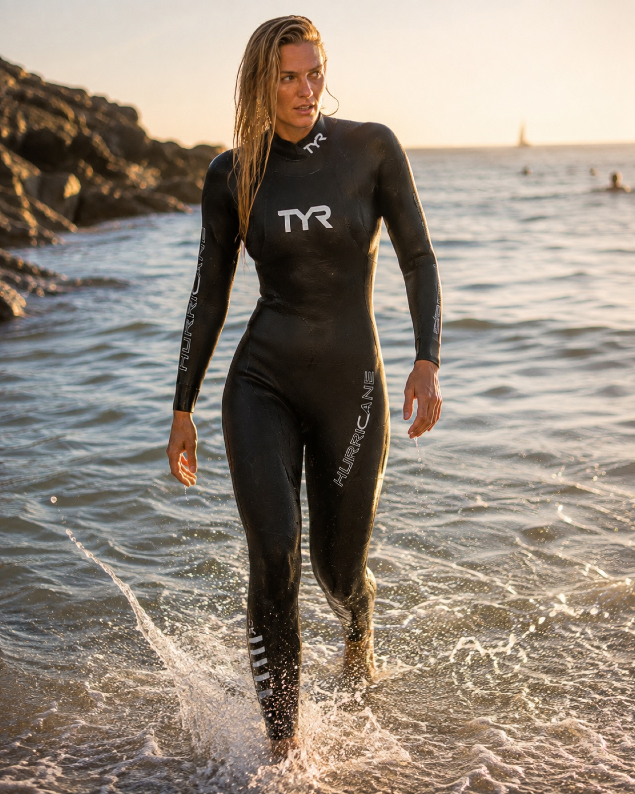
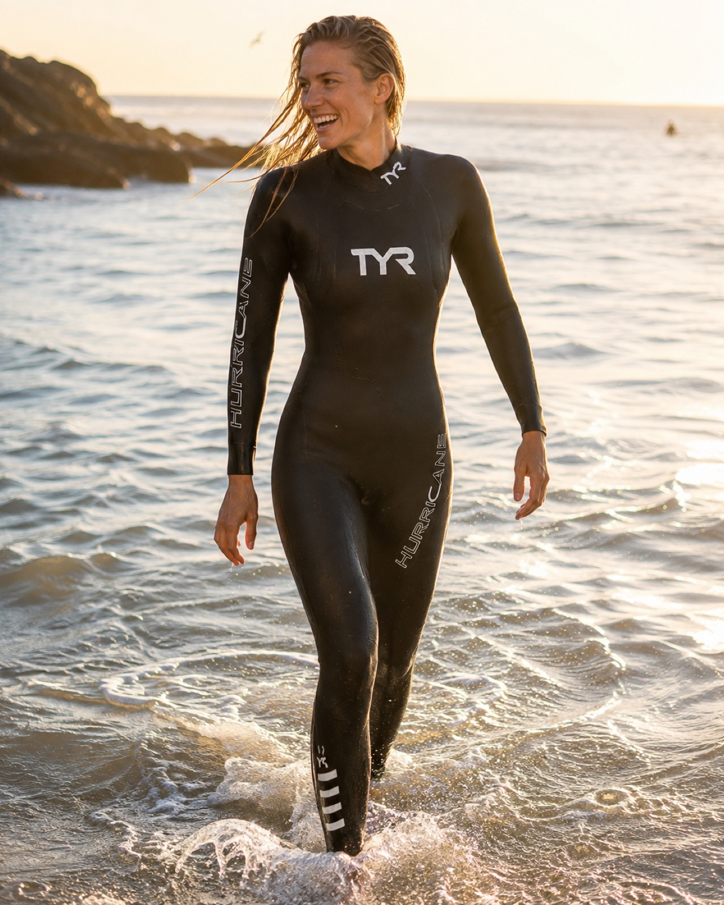

1 / 6





| 1 dag | € 15 |
| Weekend (vr-ma) | € 30 |
| Midweek (ma-vr) | € 45 |
| Hele week | € 60 |
De TYR Hurricane Cat 1 is het instap-triathlonpak van het Amerikaanse merk TYR — gemaakt voor beginnende en recreatieve triatleten en open-waterzwemmers die goed materiaal willen zonder de topprijs. Het is het toegankelijkste model in de Hurricane-reeks, met de sterkste prijs-kwaliteitverhouding.
Het pak is gemaakt van gladde slick skin neopreen met oplopende diktes: 5 mm op core, borst en benen, dunner naar de armen toe. Dat verlaagt je drijfpunt, tilt je benen op en legt je horizontaal in het water, terwijl je schouders vrij blijven voor een soepele slag. Vijf core-stabilisatiepanelen houden je in positie, en de volledige rugrits maakt aan- en uittrekken makkelijk. Alle Hurricane-pakken zijn goedgekeurd voor Ironman (WTC) en USAT.
Foto's tonen de TYR Hurricane Cat 1-lijn — vergelijkbaar met dit pak.
De gladde slick skin buitenlaag glijdt soepel door het water en houdt warmte goed vast. Slijtvast en betrouwbaar — het instapneopreen van TYR.
Speed wrap-panelen op benen, borst en core verminderen de weerstand en helpen je vlakker en sneller door het water te bewegen.
Vijf stabilisatiepanelen in de kern houden je lichaam in de juiste positie en tillen je heupen, zodat je horizontaal blijft liggen.
Quick-release enkelboorden laten het pak er in de wissel snel af glijden; vormvaste polsboorden houden water buiten en ondersteunen je slag.
Alle wetsuits in de IkLeerBorstcrawl-shop zijn tweedehands. We delen ze in drie klassen in zodat je vooraf weet wat je mag verwachten:
Stuur een berichtje op WhatsApp en we reageren doorgaans binnen een paar uur. Bezichtigen of passen kan in overleg.
WhatsApp ons